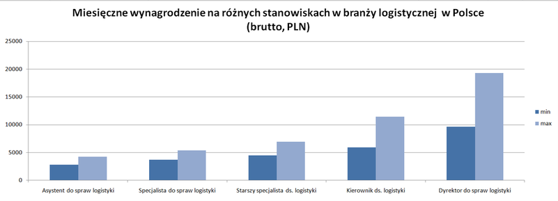

LOGISTYK
Logistyk jest odpowiedzialny za planowanie i nadzór nad procesem produkcyjnym, transportem oraz dystrybucją towarów.
Już teraz logistyk to jeden z najbardziej poszukiwanych zawodów. Liczba miejsc pracy dla logistyków od 2016 do 2026r. wzrosła o 7%. Wzrost zatrudnienia będzie napędzany potrzebą tej dziedziny w transporcie towarów w globalnej gospodarce, a także w budownictwie, motoryzacji, elektronice czy energetyce. Systemy zaopatrzenia i dystrybucji stają się coraz bardziej złożone, ponieważ pracodawcy starają się uzyskać większą wydajność przy minimalnych kosztach.
